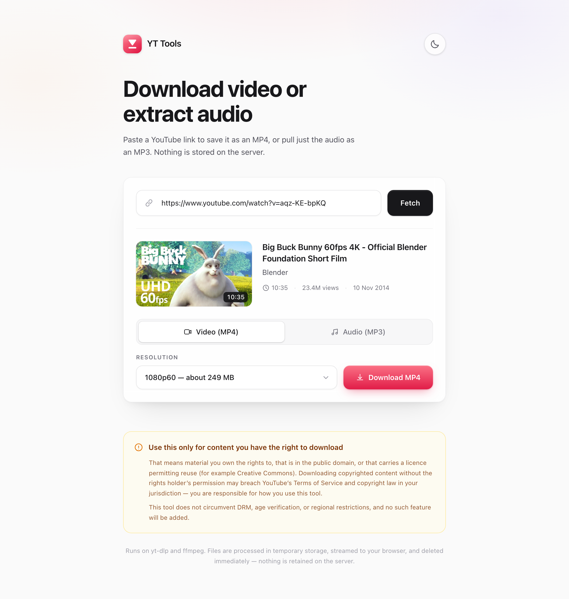
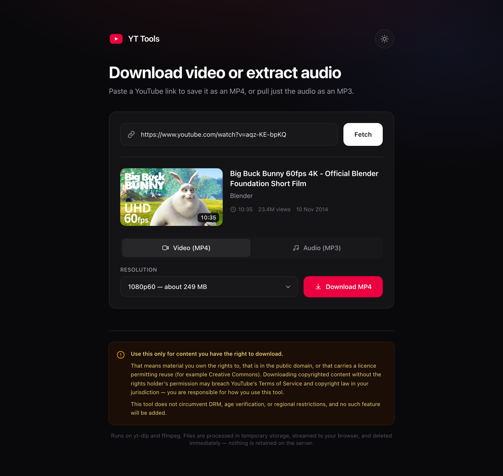

Download YouTube video
or extract audio
A free macOS app that saves videos as MP4 or pulls just the audio as MP3. Everything runs on your Mac — no account, no server, nothing kept.


Installing
Three steps. The app is not signed with an Apple Developer ID, so macOS asks once — step 3 is how you answer it.
-
Open the DMG
Download it above and double-click the file.
-
Drag YT Tools into Applications
The window shows both — drag the icon onto the Applications folder.
-
Right-click the app, then choose Open
Confirm in the dialog. This is needed once, because the app is unsigned. If you prefer the terminal:
xattr -dr com.apple.quarantine "/Applications/YT Tools.app"
What it does
Paste a link, pick a quality, get a file. The parts that are usually fiddly are handled.
MP4 at any available resolution
Every resolution the video actually offers, each labelled with a size estimate. H.264 by default so it plays anywhere.
MP3 at 128, 192 or 320 kbps
Title, date and genre copied into the tags, so your library stays tidy.
Smaller files, faster
One checkbox picks YouTube's AV1 or VP9 rendition instead — about half the bytes at the same resolution.
Playlists as a ZIP
Tick the entries you want. A video that fails is skipped and listed, not allowed to sink the batch.
Straight to Downloads
Files land in ~/Downloads with a notification. Nothing is ever
overwritten.
Nothing leaves your Mac
No account, no telemetry, no server. Downloads use your own connection, and temp files are deleted immediately.
Nothing else to install
Tools like this normally ask you to install yt-dlp, ffmpeg and a Python that is new enough. All three are inside the app.
yt-dlp
The downloader, kept current with each release.
ffmpeg
Merges video with audio and encodes MP3.
Python 3.12
yt-dlp needs 3.10 or newer; macOS only ships 3.9.
Build it yourself
The whole thing is open source under the MIT licence. Building takes a few minutes and needs Node 20 or newer.
git clone https://github.com/thomashendrixkw-code/yttools.git
cd yttools
npm ci
cd desktop
npm install
npm run dist # → desktop/dist/YT Tools-1.0.0-arm64.dmgUse this only for content you have the right to download
That means material you own the rights to, that is in the public domain, or that carries a licence permitting reuse — Creative Commons, for example. Downloading copyrighted content without the rights holder's permission may breach YouTube's Terms of Service and copyright law in your jurisdiction. You are responsible for how you use this tool.
YT Tools does not circumvent DRM, age verification, or regional restrictions, and no such feature will be added.